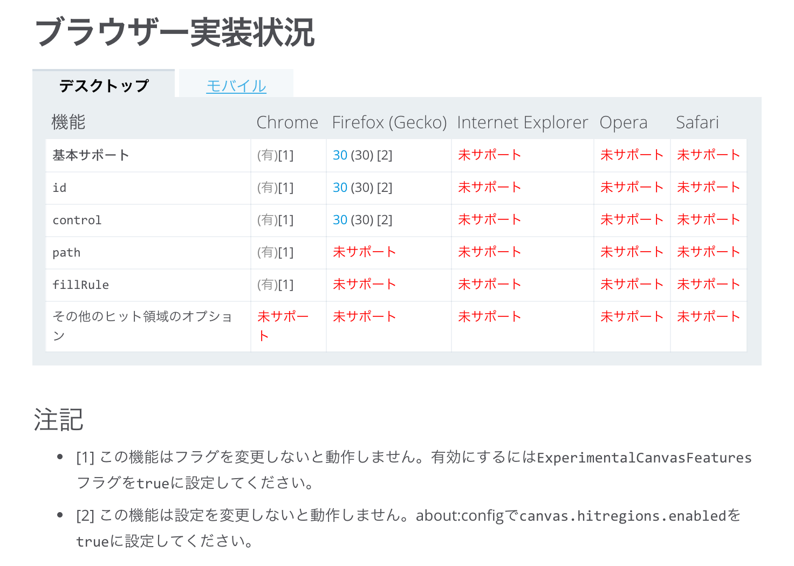

# 今日から始める HTML5 Canvas
と、コラボ特別編 Webクリエイター新年会 featuringまぼろし
2016年1月9日
まぼろし 礒田優
礒田 優
フロントエンドエンジニア
### 概要
- Canvasの基本
- Canvasでアニメーション
- パーティクルで覚えるCanvas
- Canvasの学習方法
### 目的
「Canvasを使ったことがない人に興味を持ってもらう」
## Canvasの基本
### Canvasの基本
JavaScriptを使ってグラフィックを動的に扱える要素
### Canvasの基本
ブラウザにプラグインをインストールすることなく使える
### Canvasの基本
2D Canvasの機能はほぼ全てのブラウザでサポート

### Canvasの基本
WebGLを使うことで3D表現も可能
Renault Espace Visualization
KAMRA-Deja-Vu
### Canvasの基本
WebGLのサポート状況

## 2D Canvasでできること
### 2D Canvasできること
- 矩形の描画
- 文字列の描画
- 線のスタイル
- 文字列のスタイル
- 塗りと線のスタイル
- グラデーションとパターン
- 影のスタイル
- パスの作成
- パスを描画する
- 図形の変形
- 透明度と合成
- 画像の描画
- ピクセル操作
- 画像の平滑化
- キャンバスの状態
CanvasRenderingContext2D - Web API インターフェイス | MDN
2D Canvasでのパーティクル表現
### 小まとめ
- ブラウザサポートはほぼ問題ない
- プラグインなどに依存せず使うことができる
- WebGLで3D表現もできる
- ダイナミック、インタラクティブなコンテンツに用いられる
## Canvasでアニメーション
### アニメーションの方法
Canvas自体にアニメーションの仕組みは定義されていない
### アニメーションの方法
DOMアニメーションのように、動かしたいオブジェクトを
少しずつ移動させる (いわゆるコマ送り)
### アニメーションの方法
描画内容のクリア、オブジェクトの描画を繰り返し行う。
### タイマーを用いる方法
`setInterval` や `setTimeout` などのタイマーAPI
```javascript
var pos = {x : 0, y : 0};
// 60fps(16.666666667ミリ秒ごと)の間隔で繰り返す
setInterval(function animate() {
renderingCtx.clearRect(0, 0, canvaNode.width, canvasNode.height);
pos.x += 1;
renderingCtx.fillRect(pos.x, pos.y, 100, 100);
}, 1000 / 60);
```
### パフォーマンスが優れている方法
requestAnimationFrameを使う
```javascript
var pos = {x : 0, y : 0};
function animate() {
renderingCtx.clearRect(0, 0, canvaNode.width, canvasNode.height);
pos.x += 1;
renderingCtx.fillRect(pos.x, pos.y, 100, 100);
// コールバックにanimate自身を指定して、ループで呼び出す
requestAnimationFrame(animate);
}
animate();
```
### requestAnimationFrame
ブラウザがフレームレートを決定する
無理なく描画できるが、実行間隔は保証されていない
### 小まとめ
- Canvasのアニメーションはクリアして再描画の繰り返し
- アニメーションには、タイマーAPIではなく、requestAnimationFrameを使う
### パーティクルで覚えるCanvas
2D Canvasでのパーティクル表現
### Canvasでの描画
```javascript
// canvas要素の取得
var canvasNode = document.getElementById('canvas');
// 描画コンテキストの取得
var renderingCtx = canvasNode.getContext('2d');
```
### Canvasでの描画
```javascript
// Canvas上の(40, 70)の座標に縦50px横50pxのサイズで描画する
renderingCtx.fillRect(140, 70, 50, 50);
```
### Canvasでの描画
```javascript
// 塗り色の指定
renderingCtx.fillStyle = 'orange';
// Canvas上の(40, 70)の座標に縦50px横50pxのサイズで描画する
renderingCtx.fillRect(140, 70, 50, 50);
```
### Canvasでの描画
```javascript
// パスの開始
renderingCtx.beginPath();
// パスの情報を作成
renderingCtx.rect(140, 70, 50, 50);
```
### Canvasでの描画
```javascript
// パスの開始
renderingCtx.beginPath();
// パスの情報を作成
renderingCtx.rect(140, 70, 50, 50);
// パスを描画
renderingCtx.fill();
```
### Canvasでの描画
```javascript
// Canvas上の(40, 70)の座標に縦50px横50pxのサイズで描画する
renderingCtx.fillRect(140, 70, 50, 50);
```
### Canvasでの描画
```javascript
// Canvas上の(40, 70)の座標に縦50px横50pxのサイズで描画する
renderingCtx.fillRect(140, 70, 50, 50);
```
### パーティクルを作る流れ
パーティクル自身となるクラスを定義する
↓
表示させたいパーティクルの数だけインスタンスを作る
↓
ループでアニメーションを実行する
↓
ループの中で座標情報を更新する
### Circleクラスの定義
```javascript
/**
* @class Circle
* @constructor
*/
function Circle(props) {
// 引数の初期値を設定
if (props === undefined) {
props = {};
}
// ...省略
this.x = props.x; // x座標
this.y = props.y; // y座標
this.dx = props.dx; // x座標の移動量
this.dy = props.dy; // y座標の移動量
this.radius = props.radius; // 半径
this.color = props.color; // 色
this.mode = props.mode; // 描画を塗りにするか線にするかの設定
}
```
### Circleクラスの定義
```javascript
/**
* @class Circle
* @constructor
*/
function Circle(props) {
// 引数の初期値を設定
if (props === undefined) {
props = {};
}
// ...省略
this.x = 40; // x座標
this.y = 120; // y座標
this.dx = 3; // x座標の移動量
this.dy = -5; // y座標の移動量
this.radius = 10; // 半径
this.color = 'orange'; // 色
this.mode = 'fill'; // 描画を塗りにするか線にするかの設定
}
```
### Circleクラスの定義
```javascript
Circle.prototype.render = function render(renderingCtx) {
renderingCtx.save();
renderingCtx.lineWidth = 2;
// 自身の座標情報を元に円のパスを作成
renderingCtx.beginPath();
renderingCtx.arc(this.x, this.y, this.radius, 0, 360 * Math.PI / 180);
if (this.mode === 'fill') {
renderingCtx.fillStyle = this.color;
renderingCtx.fill();
} else if (this.mode === 'stroke') {
renderingCtx.strokeStyle = this.color;
renderingCtx.stroke();
}
renderingCtx.restore();
};
```
### 円の描画
```javascript
// 塗り色の設定
renderingCtx.fillStyle = 'orange';
// 円のパスを指定
renderingCtx.beginPath();
// x座標、y座標、半径、円の開始位置、円の終了位置
renderingCtx.arc(220, 80, 20, 0, 360 * Math.PI / 180);
// 塗りつぶし
renderingCtx.fill();
```
### 円の描画
```javascript
// 線色の設定
renderingCtx.strokeStyle = 'orange';
// 円のパスを指定
renderingCtx.beginPath();
// x座標、y座標、半径、円の開始位置、円の終了位置
renderingCtx.arc(220, 80, 20, 0, 360 * Math.PI / 180);
// 線の描画
renderingCtx.stroke();
```
### Circleクラスの定義
```javascript
Circle.prototype.render = function render(renderingCtx) {
renderingCtx.save();
renderingCtx.lineWidth = 2;
// 自身の座標情報を元に円のパスを作成
renderingCtx.beginPath();
renderingCtx.arc(this.x, this.y, this.radius, 0, 360 * Math.PI / 180);
if (this.mode === 'fill') {
renderingCtx.fillStyle = this.color;
renderingCtx.fill();
} else if (this.mode === 'stroke') {
renderingCtx.strokeStyle = this.color;
renderingCtx.stroke();
}
renderingCtx.restore();
};
```
### Circleクラスの定義
```javascript
// x座標とy座標の移動量
this.dy = 20;
this.dy = 15;
Circle.prototype.update = function update() {
// x座標とy座標に移動量を加算する
this.x += this.dx;
this.y += this.dy;
// ... 略
};
```
### Circleクラスの定義
```javascript
// Circleクラスのインスタンスを生成
var circle = new Circle({
x : 130, y : 50
// ... 略
});
function animate() {
renderingCtx.clearRect(0, 0, canvasNode.width, canvasNode.height);
// 更新して描画
circle.update();
circle.render(renderingCtx);
requestAnimationFrame(animate);
}
animate();
```
### 全ての変数を定義
```javascript
var canvasNode = document.getElementById('canvas');
var renderingCtx = canvasNode.getContext('2d');
// パーティクルの個数
var circleLength = 1000;
// インスタンスをまとめておく配列
var circles = [];
// 描画の種類
var renderModes = ['stroke', 'fill'];
// パーティクルの色
var colors = [
'hsla(0, 50%, 50%, .5)',
'hsla(45, 50%, 50%, .5)',
// ... 略
];
```
### ユーティリティ関数を定義
```javascript
// 最小値と最大値の中からランダムな数値を返す
function random(min, max) {
return Math.round(Math.random() * (max - min) + min);
}
// 配列の中からランダムな値を選ぶ
function choose(array) {
return array[Math.floor(Math.random() * array.length)];
}
random(0, 5); // return 3
choose([1, 2, 3]); // return 2
```
### 初期化処理を行う関数の定義
```javascript
function init() {
// canvas要素をwindowと同じ大きさに指定
canvasNode.width = window.innerWidth;
canvasNode.height = window.innerHeight;
// 合成の種類を指定
renderingCtx.globalCompositeOperation = 'lighter';
// circleLengthの数だけパーティクルを作る
// ... 略
}
```
### 合成とは
Photoshopの描画モードのように、
重なりの表示方法が設定できる
### 合成の種類 blend-mode
[blend-modeの値が16種類、composite-modeの値が12種類使える。](https://drafts.fxtf.org/compositing-1/#canvascompositingandblending)
normal
multiply
screen
overlay
darken
lighten
color-dodge
color-burn
hard-light
soft-light
difference
exclusion
hue
saturation
color
luminosity
clear
copy
source-over
destination-over
source-in
destination-in
source-out
destination-out
source-atop
destination-atop
xor
lighter
### 合成のサポート状況

Canvas blend modes - Can I Use...
### アニメーションを行うanimate関数の定義
```javascript
function animate() {
// 一度描画をクリアして、背景を黒で塗りつぶす
renderingCtx.clearRect(0, 0, canvasNode.width, canvasNode.height);
// 全てのパーティクルの更新と描画を実行
circles.forEach(function (circle) {
circle.update();
circle.render(renderingCtx);
});
// animate関数をループで実行する
requestAnimationFrame(animate);
}
```
### あとは実行するだけ
```javascript
// 初期化を済ませてアニメーションを実行
init();
animate();
```
### このくらいなら100行程で実装できる
### Canvasの学習方法
### Canvas基礎の覚え方
### 実践的なテクニック
### 実践的なテクニック
### 基礎を覚えたら
コードを書いてみる
### 基礎を覚えたら
書いてみたその1
github.com/isoden/skewslider
### 基礎を覚えたら
書いてみたその2
### 基礎を覚えたら
実際に書いてみることで勘所がわかる
### 人のコードを見て覚える
CodePen
### 小まとめ
- 基礎を覚えたら、コードを書いてみる
- すごい人の書いたコードを見てみる
### 覚えておきたい機能 addHitRegion
canvas要素にヒット領域を追加する
### addHitRegionの使い方
### addHitRegionの使い方
```javascript
// 図形の描画
renderingCtx.beginPath();
renderingCtx.rect(40, 40, 40, 40);
renderingCtx.fill();
// ヒット領域を追加
// regionのIDを指定する
renderingCtx.addHitRegion({id: 'LightGreen'});
```
### addHitRegionの使い方
```javascript
// canvas要素自体のclickイベントを購読
canvasNode.addEventListener('click', function (event) {
// eventオブジェクトにregionが渡される
if (event.region === 'LightGreen') {
alert('クリックされたよ！');
}
});
```
### ブラウザサポートはこれから

ブラウザー実装状況 CanvasRenderingContext2D.addHitRegion() - Web API インターフェイス | MDN
### おわりに
## ありがとうございました
Let's Enjoy Canvas 🎨
### Thanks
- https://www.flickr.com/photos/moriza/126238618
- https://www.flickr.com/photos/quinndombrowski/5200218267/